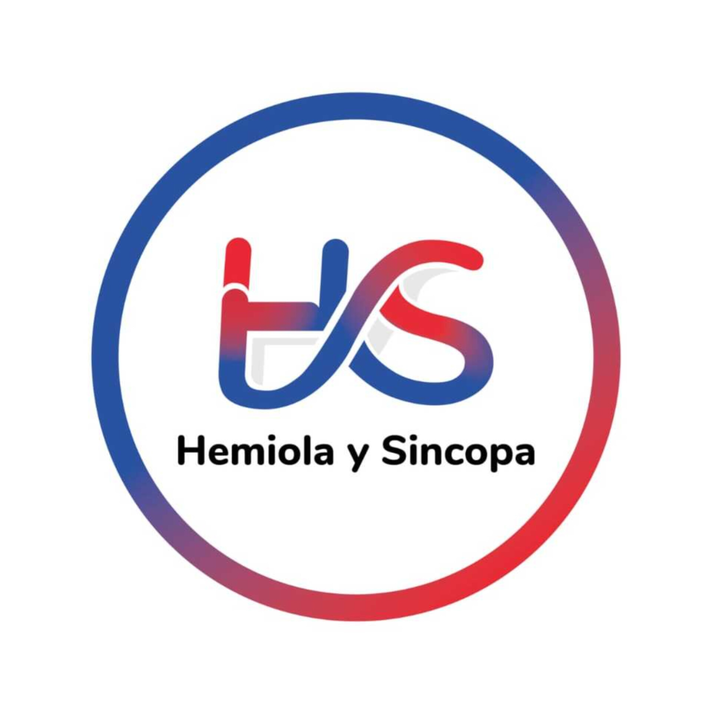
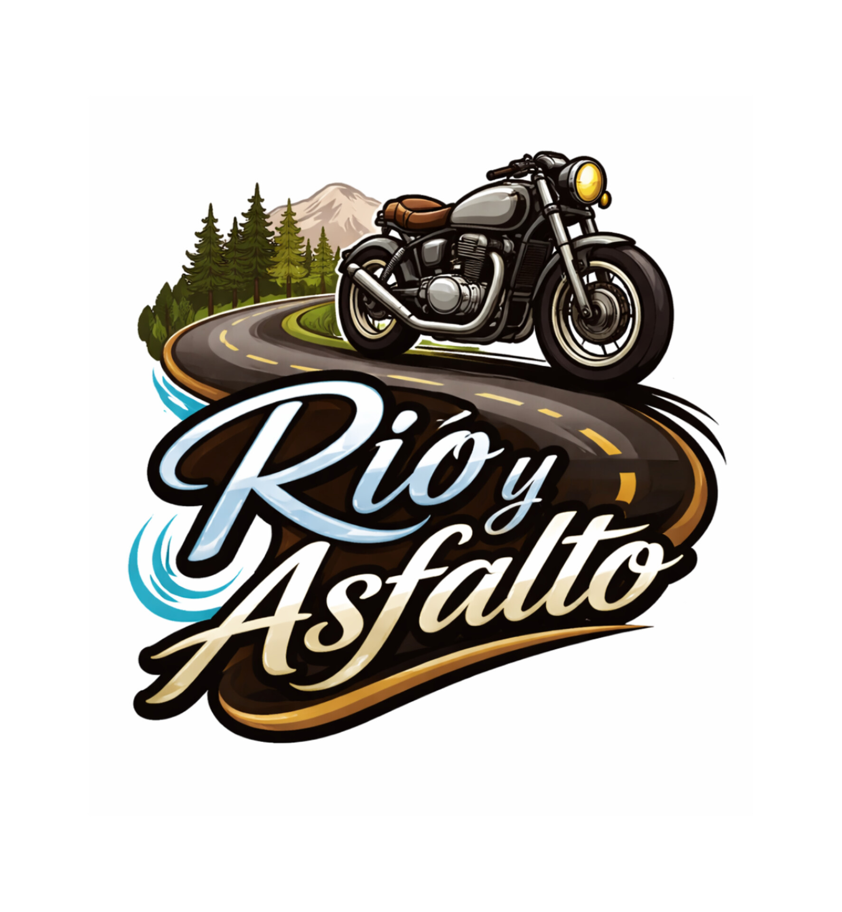

Fabian Araque
Fabian Araque
Fabian Araque
Fabian Araque
Creador musical.
Desarrollo proyectos donde la música,
la imagen se cruzan.
Sello y plataforma de producción, publicación y acompañamiento artístico.
Educación musical enfocada en ritmo, teoría aplicada y exploración sonora.

Universo musical y narrativo donde imagen y sonido caminan juntos.
Viaje, paisaje y música como experiencia audiovisual.